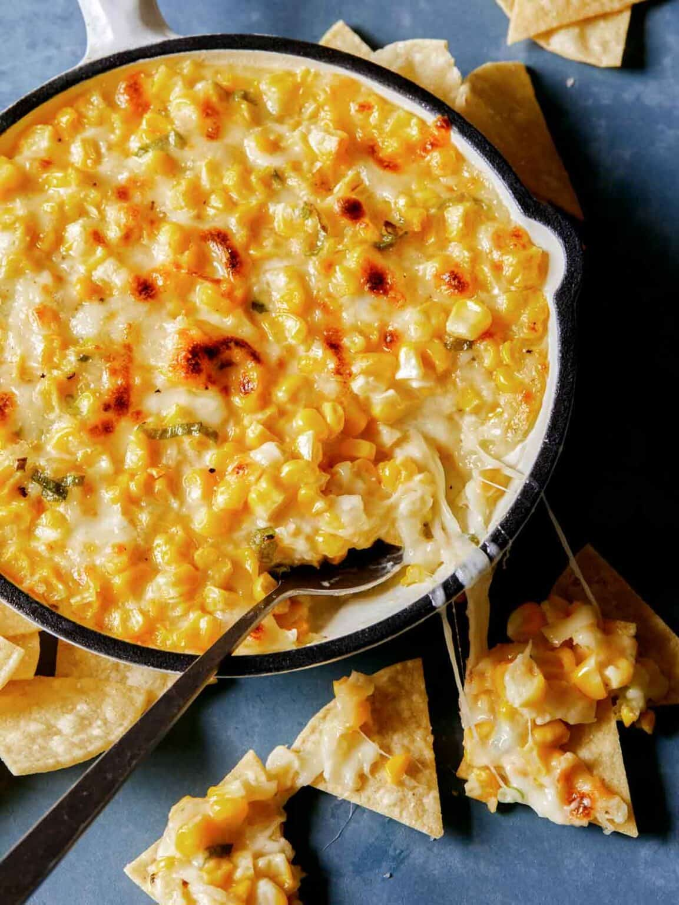

Corn Cheese Recipe

Source
Description
A simple and delicious recipe for creamy, gooey Korean Corn Cheese. Minimal ingredients and made in under 20 minutes. Serve with chips or bread for dipping as a yummy appetizer, or keep it simple and serve as a side dish. We love it with freshly grilled meat.
- fresh corn
- shredded mozzarella
- sugar
- green onions
- salt and pepper
Steps
- Preheat the oven to 400˚F.
- Combine all the ingredients into a mixing bowl and stir together. Season with salt and pepper and give it one more good stir.
- Pour mixture into a lightly greased baking dish.
- Bake corn cheese for 10 minutes to melt the cheese and heat through.
- Transfer the dish into the broiler and broil for about 2 minutes to make it bubbly and brown on top.
- THAT'S IT! You can now serve the delicious Korean corn cheese to some happy people!